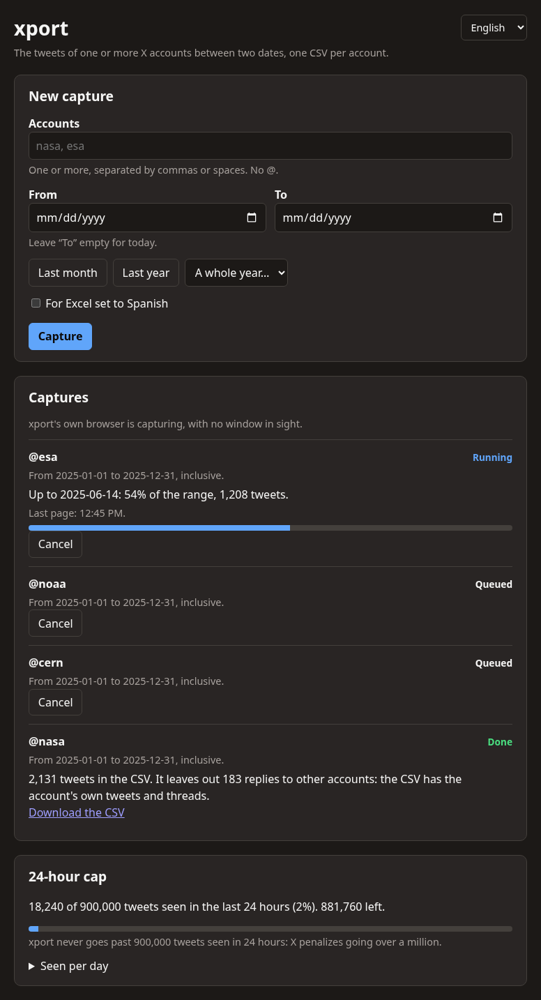

from:account 2026-01-01 → 2026-06-30 ↗ account_2026-01-01_2026-06-30.csv
The tweets of any X account, between two dates, in a CSV.
Type one or more accounts and a date range. xport goes through X's search for you and leaves you one CSV per account: the date, the full text, the links and the quoted tweet. It uses a regular X session, with no API key and nothing to pay.
It cannot cross the cap in X's terms. It counts every post it sees, including quoted tweets and the retweets it later drops, and stops at 900,000 within any 24-hour window. If it cannot count what is being captured, the capture does not start or stops.

Many accounts, hands off

- Open xport from the applications menu and its page shows up in your browser. The first time, «Log in to X» opens a window to sign in to X.
- Type the accounts and the dates and press «Capture». They go into a queue and come out one at a time.
- Get on with your day. On Linux, xport captures with its own Chrome on an invisible screen. If X throttles the search, it waits and carries on from where it was.
- It tells you when it is done. Each account ends with a notification and its CSV to download. If one brought no tweets, it says why: it doesn't exist, it's suspended, it's protected or it posted nothing in those dates.
The CSV
One per account and date range, in UTF-8 and comma separated, with a checkbox for an Excel set to Spanish. Links go in one cell, separated by spaces; if the tweet quotes another, the quoted tweet's id and link are included.
account_2026-01-01_2026-06-30.csv
account,created_at,content,links,quoted_tweet_id,quoted_tweet_url account,2026-03-14T18:02:11+00:00,"The full report is out today.",https://example.org/report,, account,2026-03-12T09:40:57+00:00,"This, yes.",,1899412345678901234,https://x.com/other/status/1899412345678901234
The cap

The cap is 900,000 and not a million, to leave a margin. The window is rolling: a per-day counter would let almost two million through between 11 pm and 1 am. The cap's ledger lives in a separate database, so it survives deleting the tweets, and no setting changes it.
Install
Download the installer for your system from the latest release. It brings its own Python: all you need is Google Chrome (or Chromium or Edge).
Linux
tar -xzf xport-*-linux-x86_64.tar.gz ./xport/install.sh
It ends up in the applications menu and as the xport command. It needs
cage, the invisible screen for its Chrome: the installer tells
you if it is missing.
Windows
Unzip the .zip and double-click xport\install.cmd. It ends up in the Start menu and
on the desktop.
macOS
Open the .tar.gz and drag xport.app to Applications.
On Windows and macOS the capture is done by xport's extension in your Chrome, which you load once. Every step, building the installer from the source and uninstalling, in Install.
It is private
What you capture stays on your computer. The service only listens on it, only answers requests addressed to it and sends nothing anywhere else. The X session stays in xport's profile and the cookies never leave it.
Status
- Linux: tried end to end against x.com, with the installer and the windowless capture.
- Windows and macOS: the installer builds and starts in continuous integration, but it has not been tried on those systems yet.
- With X's official API, which is paid, it is implemented but has not been tried against the real API.
- Downloading without a browser with a regular account does not work: x.com changed how it signs requests.